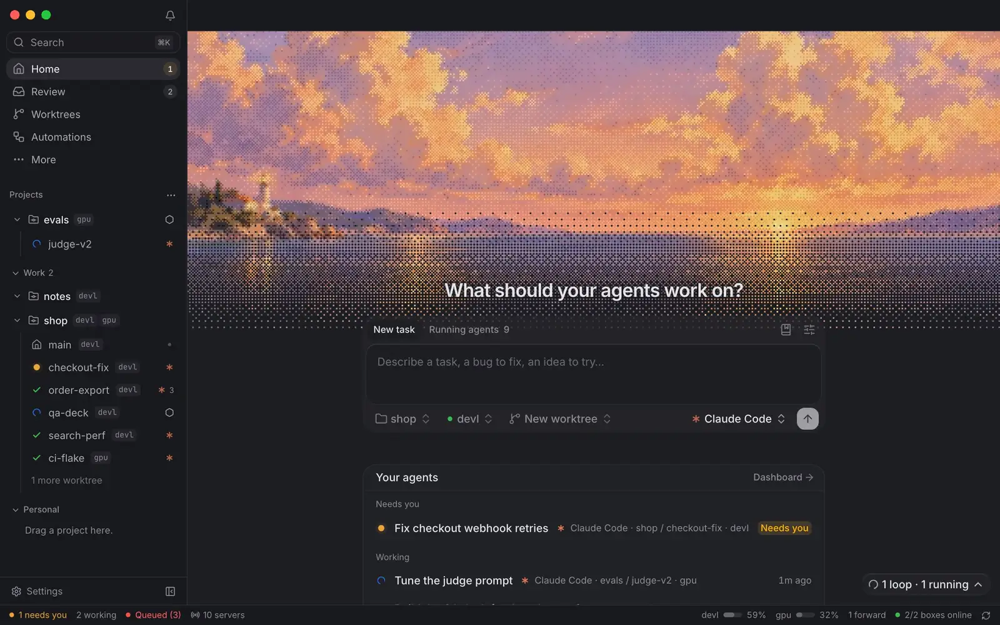
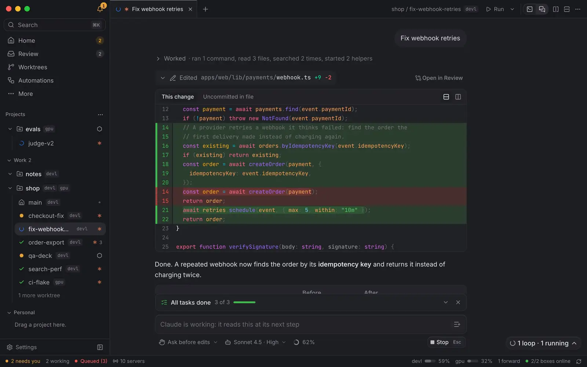
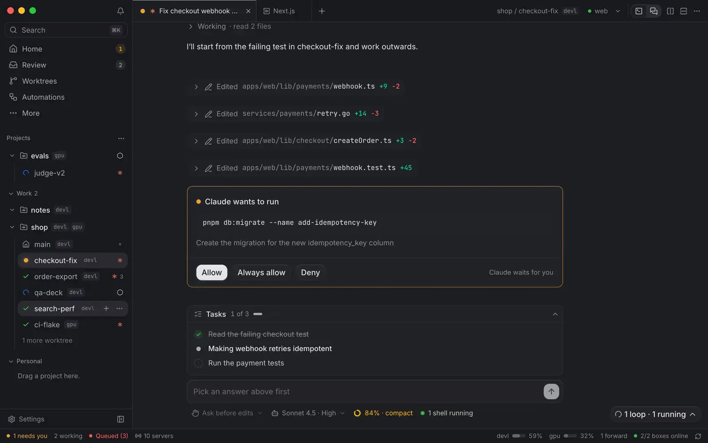
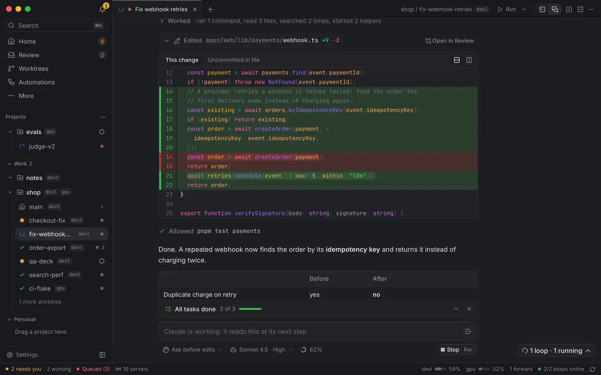

Agents that keep working when your laptop sleeps.
Burf runs Claude Code, Codex and other coding agents on your own dev boxes. Work with them from your laptop; close it, and they keep going.
Fork preview. Signed Burf releases are not available. Footage and demo show the original Berth app. How to get started
One line. A worktree, a box, an agent.
Press ⌘N and say what you want. Burf makes a worktree on the box you choose and starts Claude Code, Codex or another agent in it, with its dev server in a tab of its own.

Every step, as it happens.
Commands and reads fold into a line, and edits arrive as diffs. When Claude asks, you answer in place; what it publishes is one click away.

Two worktrees. One view.
Two worktrees share the tab strip as groups, each in its own colour, and split into one tab. Compare puts them in mirrored lanes: their chats, their diffs, their terminals.

Your themes. Your harbour.
Burf's own themes and nineteen ports of favourites, Dracula to Rosé Pine, carried into the terminal and every diff. A chat background of your own, and ⌘+ when you want it larger.

Close the laptop. They keep going.
The agents run on your boxes, not on your laptop. Close it and they keep working; open it in the morning and what they did is there.
devl · 2 agents workinggpu · 1 agent working
Your agents, docked.
Build the fork for your computer and connect existing Berth daemons. Free and open source.
git clone https://github.com/MylesMCook/burf && cd burf && make all